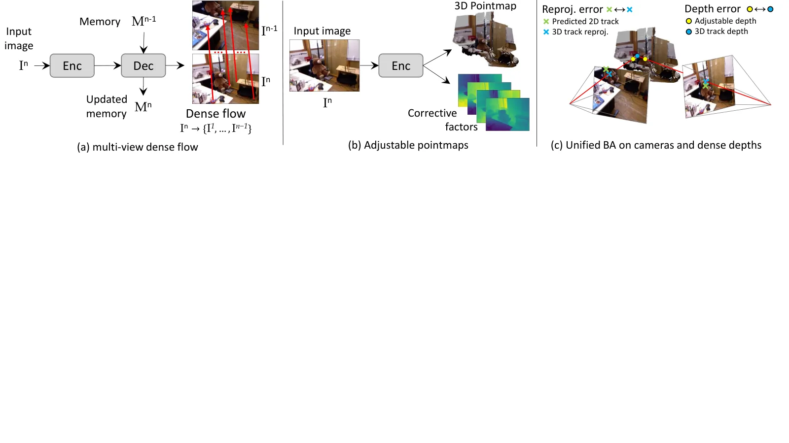
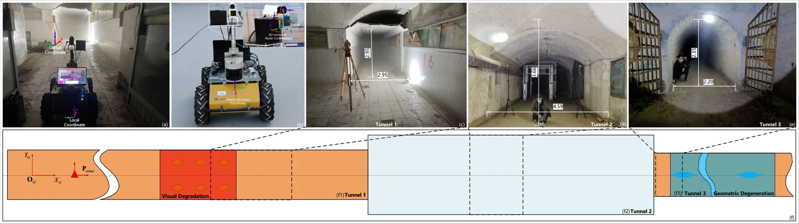
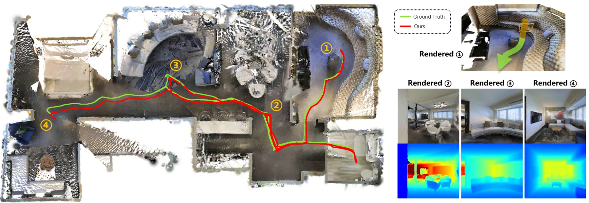
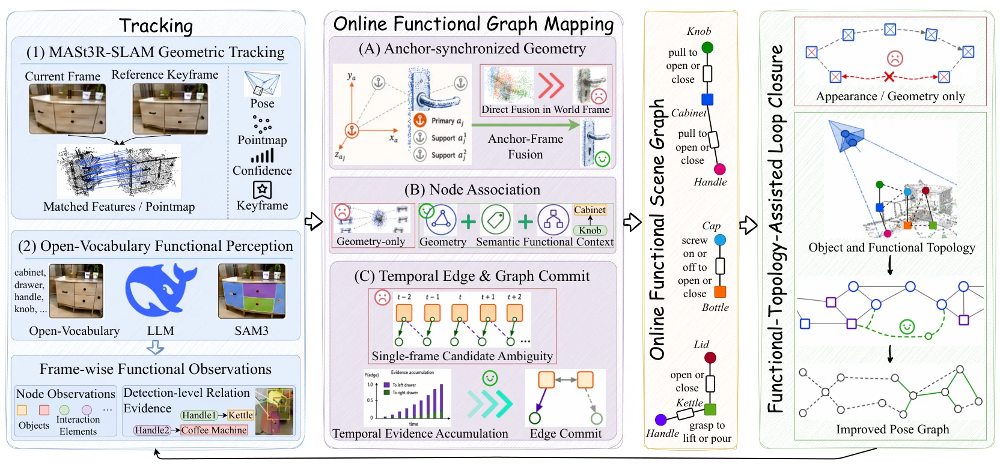
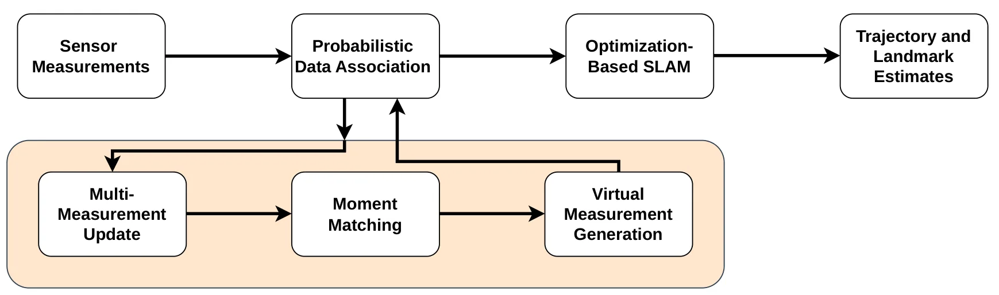

新论文 · 日期 2026-09-04 · score 19 · S层 · Geometry Foundation Models / 3D Foundation Models · cs.CV
内容级别：完整单篇海报
作者：Vincent Leroy, Philippe Weinzaepfel, Lojze Zust, Yohann Cabon
评分 19/10
几何基础模型多视图匹配正则化 BAVSLAM单目深度
一句话工作总结：这是本周最值得关注的底层几何进展：不是把 feed-forward 重建结果直接当最终地图，而是用可扩展的 coarse-to-fine 匹配产生约束，再让深度先验稳定 BA 在纯平移、静止视点和纯旋转等退化条件下的优化。
BLASt3R 将流式多视图像素匹配、可调单目 pointmap 先验与正则化 bundle adjustment 统一起来，兼顾在线 VSLAM 与无序图像集 SfM。论文报告其在 TUM-RGBD、ETH3D-MVS 等基准上的精度—速度折中，并强调无需相机标定即可运行。
Recent hybrid Structure-from-Motion (SfM) systems combine the robustness of feed-forward 3D reconstruction with the accuracy of traditional bundle adjustment (BA) with pixel matching. They are usually the best…

新论文 · 日期 2026-09-05 · score 17 · A层 · Robust State Estimation / Uncertainty · cs.RO
内容级别：半海报
作者：Kun Hu, Menggang Li, Kaidi Wu, Zhiwen Jin
评分 17/10
可靠状态估计4D 毫米波雷达IESKF退化检测多模态融合
一句话工作总结：这是可靠状态估计方向的直接桥接：重点不只是增加传感器，而是用可观测性指标检测视觉/几何退化，再改变各模态在滤波更新中的权重和组合。
FIRE-LIVWO 在地下煤矿烟尘、长直走廊和几何退化环境中，将 4D mmWave radar、LiDAR、视觉、IMU 与轮速计紧耦合到 IESKF 和统一 VoxelMap 中，并根据视觉可观测性与几何可观测性在线切换融合模式。论文摘要报告平均定位误差 5.677 m，并开源代码。
Achieving robust SLAM in large-scale underground coal mines with complex structures and severe degeneracies remains highly challenging. Dense smoke and dust cause substantial loss of visual information and deg…

新论文 · 日期 2026-09-04 · score 10 · A层 · Embodied Navigation / VLN / Spatial Reasoning · cs.CV, cs.AI
内容级别：半海报
作者：Tianyidan Xie, Shenyi Wang, Qiang Tang, Mingjie Wang
评分 10/10
空间记忆具身智能轨迹检索空间锚点多模态检索
一句话工作总结：它把几何轨迹、对象身份和语言状态转成可查询记忆，是从 3D 表征通向空间推理/具身决策的桥接工作。
LTE 用自然语言描述、稀疏空间锚点和视觉锚点混合压缩动态物体轨迹，并构建 Spatial Memory Benchmark 评估语义轨迹检索与长时物体检索。官方 HTML 报告 SMB 上 STR/LOR 为 45.3%/48.7%，并在 24 小时视频上实现 26.1× 压缩和 0.43 s/query。
Embodied agents performing long-horizon tasks require a memory representation in which the state transitions of dynamic objects remain queryable in natural language across hours-to-days observation horizons. E…

新论文 · 日期 2026-09-07 · score 21 · B层 · Neural Rendering / 3DGS / NeRF · cs.RO, cs.CV
内容级别：简报式摘要
作者：Junze Bao, Ye Gao, Yiming Huang, Xiaolong Yu
评分 21/10
3DGS实时重建闭环
一句话工作总结：B 级观察：把 3DGS 从高质量重建推进到带闭环的 RGB-D 在线系统。
LightSplat 用局部稀疏特征跟踪、双线程 Gaussian 子地图和特征加速的 3DGS 配准实现在线闭环，报告平均 8 FPS。
SLAM systems based on 3D Gaussian Splatting (3DGS) have recently demonstrated promising reconstruction accuracy for dense 3D scene representations. However, current 3DGS systems struggle to meet the strict dem…

新论文 · 日期 2026-09-07 · score 15 · B-层 · Traditional LiDAR/Visual SLAM · cs.RO
内容级别：简报式摘要
作者：Xinggang Hu, Chenyangguang Zhang, Zihan Zhu, Ruida Zhang
评分 15/10
功能场景图交互感知在线闭环
一句话工作总结：B- 级基础观察：把地图从几何和语义对象扩展到可交互功能关系。
Functional-SLAM 将对象—交互元素的功能关系作为在线 SLAM 状态维护，并用功能拓扑辅助重复纹理场景中的闭环。
Existing SLAM systems lack modeling of the functional relations required for fine-grained robotic interaction. Functional 3D scene graphs can represent relations between objects and interaction elements, but e…

新论文 · 日期 2026-09-05 · score 14 · B-层 · Traditional LiDAR/Visual SLAM · cs.RO, stat.AP
内容级别：简报式摘要
作者：Khoa Nguyen, Mitchell Turton, Florian Meyer
评分 14/10
概率数据关联iSAM2误检鲁棒性
一句话工作总结：B- 级基础观察：针对误检和漏检的概率关联可作为可靠闭环前端。
该方法将多目标跟踪中的 PDA 通过矩匹配转换为线性高斯虚拟地标观测，使其可嵌入 iSAM2 等优化式 SLAM。
Optimization-based simultaneous localization and mapping (SLAM) makes it possible to reduce accumulated navigation errors of sensing platforms by returning to known areas (loop closure). In this paper, we pres…